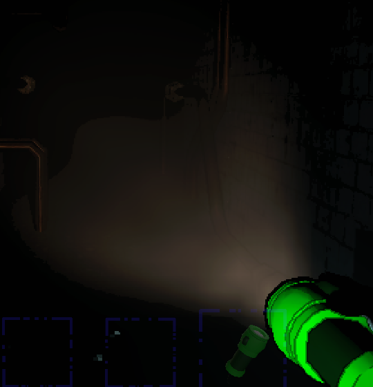
A Flashlight é o item mais básico e indispensável para qualquer exploração nas instalações escuras, sem ela, o jogador fica praticamente cego, aumentando muito o risco de ser pego por criaturas, e usada para iluminar corredores, salas e áreas externas durante missões noturna.
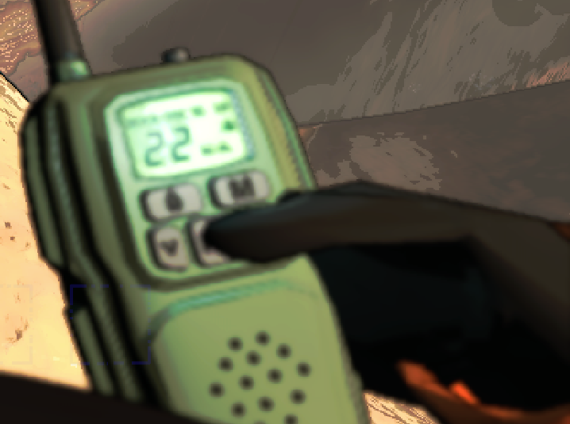
O Walkie-tolkie é o principal item de comunicação entre jogadores durante as missões, ele permite que um membro da equipe avise os outros sobre perigos ou rotas seguras, é especialmente útil quando o grupo se divide para explorar diferentes áreas do mapa.
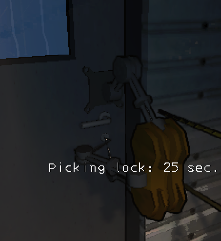
O Lock-picker é usado para abrir portas trancadas sem precisar de chave ou outros recursos, ele economiza tempo valioso, já que muitas áreas bloqueadas escondem scraps importantes, permite acesso rápido a rotas alternativas, evitando caminhos perigosos ou longos.
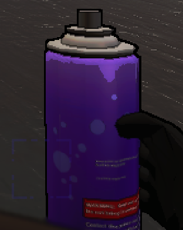
O Spray-paint é usado para marcar paredes e superfícies durante a exploração, ele ajuda a criar sinais visuais que orientam o time em ambientes confusos, pode indicar rotas seguras ou locais onde há perigo eminente, funcionando como guia rápido para equipe.
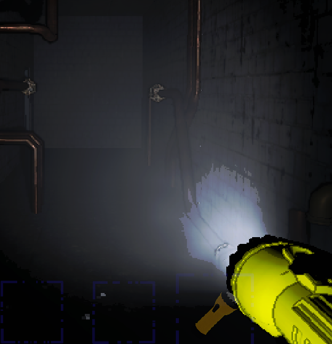
A Pro-Flashlight é uma lanterna avançada que oferece iluminação muito mais forte que a padrão, ela amplia significativamente a visibilidade em corredores escuros e áreas abertas é essencial para detectar inimigos à distância e evitar emboscadas também ajuda na coleta.
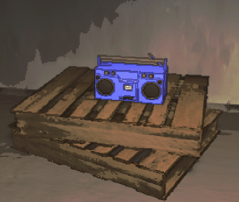
A Boombox é um item sonoro que pode ser usado para gerar distrações dentro das instalações, ele emite música ou ruídos altos, atraindo a atenção de criaturas para longe dos jogadores, também pode servir como marcador sonoro, ajudando a equipe a localizar pontos de referência.
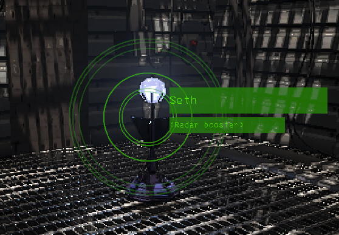
O Radar-booster é um item que amplia a capacidade de rastreamento do radar da nave, ele permite que o jogador veja a posição de colegas ou objetos em áreas mais distantes, funciona como uma extensão estratégica, aumentando a cobertura do mapa.
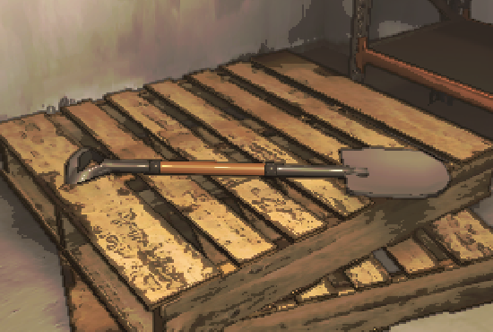
A Shovel é uma ferramenta simples que pode ser usada como arma improvisada contra criaturas, seu ataque é básico, mas permite ao jogador se defender em situações emergenciais, é útil para afastar inimigos menores e ganhar tempo para fugir ou se reorganizar.
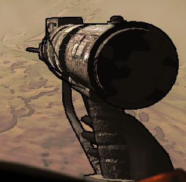
A Zap-gun é uma arma elétrica projetada para paralisar inimigos temporariamente, ele dispara uma carga que imobiliza criaturas, dando ao jogador tempo para escapar, é especialmente eficaz contra monstros rápidos ou agressivos que seriam difíceis de evitar.
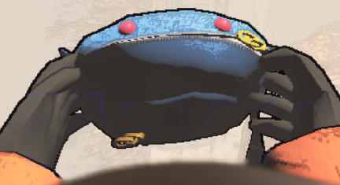
A Belt-bag é um item de utilidade que aumenta a capacidade de carregar scraps, ele funciona como uma bolsa extra, permitindo ao jogador levar mais objetos de valor, isso é essencial para maximizar os lucros em missões longas ou com muitos itens disponíveis.
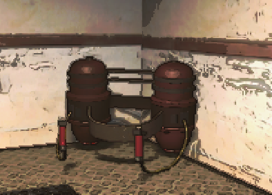
A Jat-pack é um item de mobilidade que permite ao jogador voar por curtos períodos, ele facilita atravessar áreas perigosas sem precisar passar por corredores infestados, também ajuda a alcançar locais elevados ou inacessíveis, ampliando as rotas de exploração.
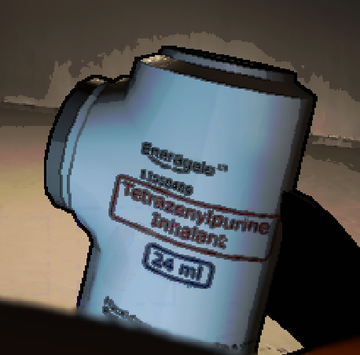
O TZP é um item químico que funciona como estimulante para o jogador, ao ser usado, ele aumenta temporariamente a velocidade e a resistência física, essa melhoria permite carregar scraps mais rápido e fugir de criaturas com maior eficiência,
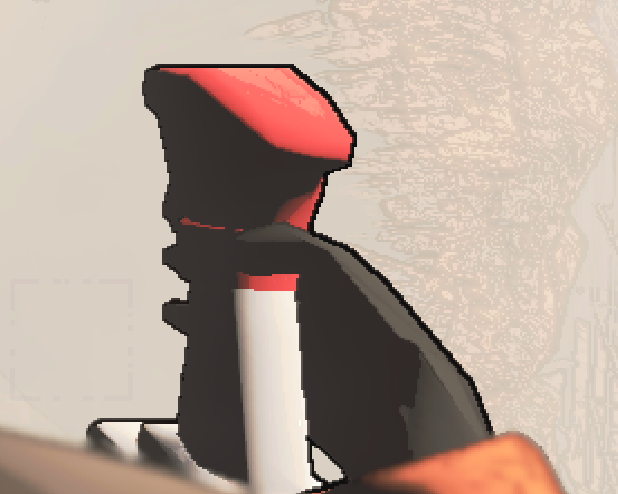
O Extension-ladder pode ser usado no o carro para facilitar o transporte de scraps pesados, ele ajuda a dar boost para fazer uma rota direta entre áreas elevadas e a entrada do veículo, isso reduz o tempo gasto em deslocamento, acelerando o processo.
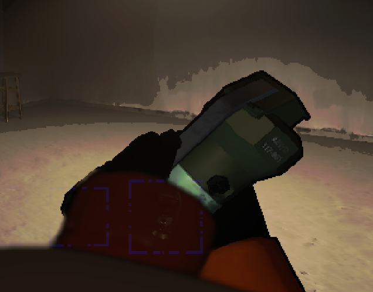
A Stun-grenade é uma granada que causa um efeito de atordoamento em criaturas próximas, ao ser lançada, ela cria uma explosão de luz e som que paralisa temporariamente os inimigos, é extremamente útil em situações de perseguição.
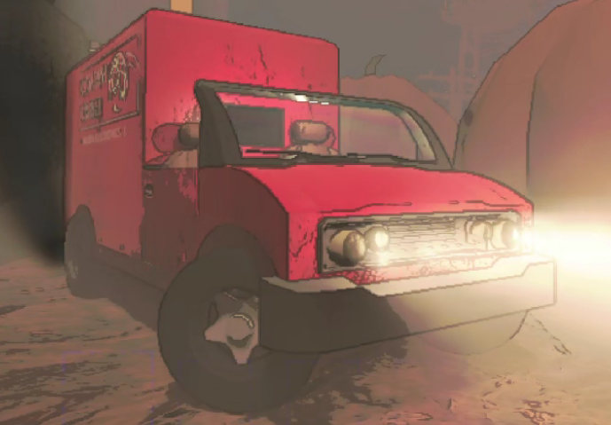
O Cruiser é o veículo principal da equipe, funcionando como base móvel durante as missões, ele serve como ponto seguro de retorno, onde os jogadores entregam os scraps coletados, também é o local onde ficam armazenados os itens comprados.
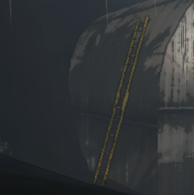
A Extension-ladder é uma escada portátil que pode ser posicionada em diferentes locais do mapa, ele permite acessar áreas elevadas ou atravessar desníveis que seriam inacessíveis normalmente, é especialmente útil para criar rotas rápidas de entrada e saída durante a coleta de scraps.
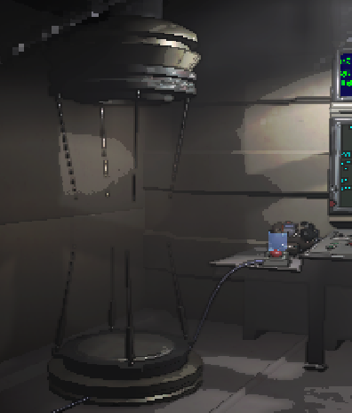
O Teleporter é um dispositivo instalado na nave que transporta instantaneamente jogadores de volta para ela, ele funciona como rota de emergência, salvando quem está em perigo dentro das instalações, é especialmente útil quando o tempo está acabando.
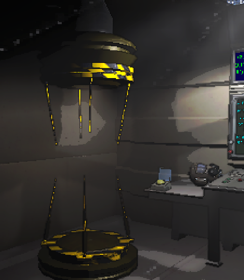
O Inverse-teleporter é uma versão alternativa do teleporter tradicional, em vez de trazer o jogador de volta a nave, ele envia o usuário para um ponto aleatório dentro da instalação, isso pode ser usado como estratégia para explorar áreas internas bem rapido.
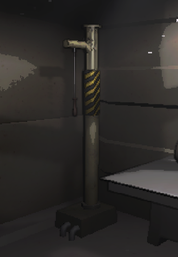
O Loudhorn é um dispositivo sonoro instalado na nave, ele emite um alarme extremamente alto que pode ser ouvido pelos jogadores dentro da instalação, sua principal função é servir como sinal de alerta ou comunicação rápida da equipe na nave.